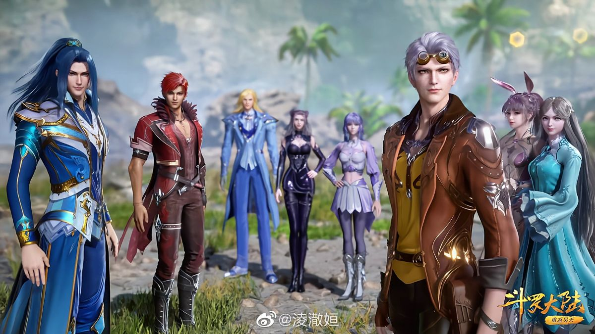

Soul land

Tentang Soul Land (Douluo Dalu)
"Soul Land," yang juga dikenal sebagai "Douluo Dalu," adalah sebuah donghua (serial animasi) populer asal Tiongkok yang diadaptasi dari novel web karya Tang Jia San Shao. Cerita ini berfokus pada dunia di mana individu dapat mengembangkan kekuatan spiritual mereka dan menjadi Master Jiwa (Spirit Master). Berikut adalah gambaran umum tentang seri ini: Sinopsis Cerita Setting: Cerita berlangsung di dunia fantastis yang disebut Soul Land, di mana anak-anak mulai mengembangkan Jiwa mereka pada usia enam tahun. Tujuannya adalah untuk menjadi Douluo (Master Jiwa), dengan tingkat jiwa yang lebih tinggi menunjukkan kekuatan yang lebih besar. Protagonis: Tang San, setelah menciptakan senjata terlarang di kehidupan sebelumnya, dikejar oleh sektenya dan akhirnya jatuh dari tebing. Ia terbangun di Soul Land, membawa ingatan dan keterampilan dari kehidupan sebelumnya. Jiwa dan Kemampuan: Setiap orang memiliki Jiwa yang memberikan kemampuan unik. Tang San memiliki Jiwa langka ganda: Blue Silver Grass (Rumput Perak Biru) dan Clear Sky Hammer (Palu Langit Jernih). Jiwa memiliki peringkat, dan Master Jiwa harus mendapatkan Cincin Jiwa dengan mengalahkan makhluk mitos untuk meningkatkan kekuatan mereka.

Tema Utama
Pengembangan Diri: Seri ini menekankan perjalanan peningkatan diri, saat Tang San menghadapi berbagai tantangan untuk meningkatkan tingkat jiwa dan kemampuan bertarungnya. Konflik: Tang San menghadapi berbagai musuh, termasuk Kekaisaran Jiwa (Spirit Empire) dan musuhnya, Bi Bi Dong, sambil mengungkap kebenaran tentang asal-usulnya.
Pembangunan Dunia
Struktur Politik: Dunia ini memiliki berbagai klan, kekaisaran, dan sekolah, dengan Kekaisaran Jiwa yang mewakili rezim totaliter yang harus dilawan oleh para protagonis. Akademi: Tang San bersekolah di Shrek Academy, sebuah institusi bergengsi untuk Master Jiwa, yang menjadi lokasi sentral untuk pelatihan dan pengembangan karakter.
Elemen Visual dan Budaya
Gaya Animasi: Donghua ini dikenal dengan animasinya yang cerah dan adegan pertarungan yang menarik, menampilkan elemen magis dari dunia tersebut. Pengaruh Budaya: Seri ini menggabungkan estetika Tiongkok dan Eropa, menampilkan elemen seperti gereja megah dan perpaduan antara teknologi modern dengan setting tradisional.
Penerimaan dan Dampak
Popularitas: "Soul Land" telah mendapatkan banyak penggemar, yang mengarah pada adaptasi dalam berbagai format, termasuk manhua (komik) dan serial live-action. Perbandingan: Seri ini sering dibandingkan dengan serial populer lainnya dalam genre yang sama, berkat alur cerita yang menarik dan pengembangan karakter yang mendalam. "Soul Land" telah menjadi salah satu donghua yang paling dikenal dan dicintai, dengan banyak penggemar yang mengikuti petualangan Tang San dan teman-temannya dalam dunia yang penuh dengan tantangan dan keajaiban.